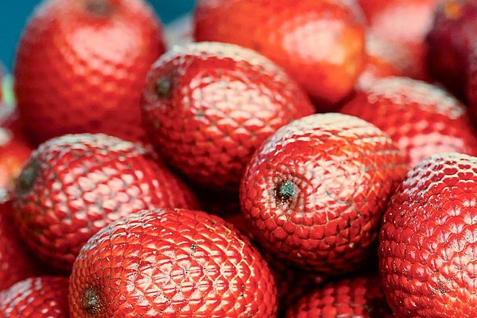
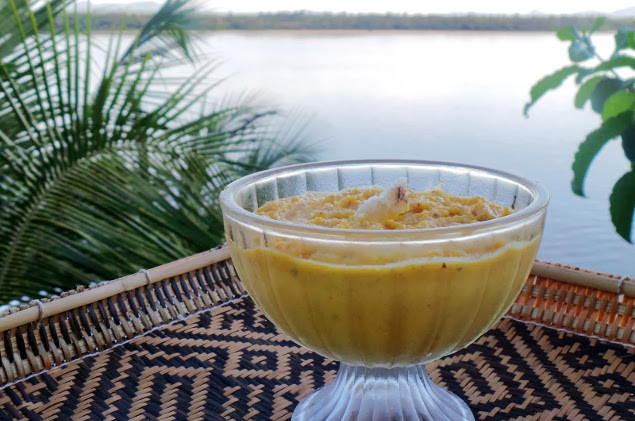

Aspectos Químicos do Buriti
O buriti é uma fruta nativa rica em betacaroteno, que o corpo humano converte em vitamina A. É também uma excelente fonte de vitamina C e antioxidantes.
O óleo extraído da polpa do buriti tem propriedades hidratantes e protetoras para a pele, além de ser usado na alimentação por suas características nutricionais e antioxidantes.
Receita: Mousse de Buriti
Ingredientes
- 2 xícaras de buriti
- 1 lata de creme de leite
- 1/2 pacote de gelatina sem sabor
- 1 lata de leite condensado
- 1/2 lata de leite
Modo de Preparo
- Dissolver a gelatina em 60ml de água e separar.
- Bater o leite condensado e o creme de leite primeiro.
- Misturar o leite com a gelatina e colocar no liquidificador.
- Adicionar a polpa de buriti por último.
- Colocar em uma vasilha e levar à geladeira por uma hora antes de servir.
- Servir gelado.